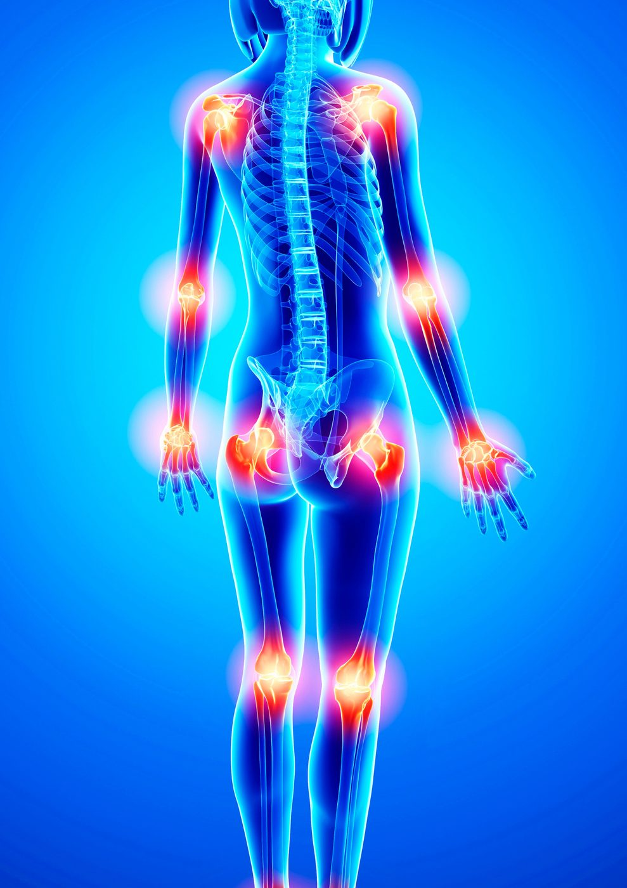

Douleurs articulaires : usure ou maladie auto-immune ?
L'arthrose est une maladie d'« usure », où le cartilage qui protège une articulation se dégrade avec le temps, touchant généralement les articulations portantes comme les genoux et les hanches. La polyarthrite rhumatoïde et d'autres maladies auto-immunes fonctionnent différemment : le système immunitaire attaque directement le tissu articulaire.
Comment les deux diffèrent généralement
- L'arthrose tend à s'aggraver avec l'activité et à s'atténuer au repos, touche les articulations de façon plutôt inégale, et la raideur matinale disparaît généralement en moins de 30 minutes
- Les maladies articulaires auto-immunes provoquent souvent une douleur symétrique (les deux mains, ou les deux pieds), une raideur matinale de plus de 30 minutes, et peuvent s'accompagner de fatigue ou d'un malaise général
Ce ne sont pas des règles strictes — les deux peuvent se chevaucher, ou coexister — mais elles constituent un bon point de départ pour décrire clairement vos symptômes.
Signes d'alerte à mentionner
Certains éléments évoquent davantage une cause inflammatoire et auto-immune : une raideur matinale de plus de 30 minutes, plusieurs articulations touchées de façon symétrique, un gonflement ou une chaleur visible autour d'une articulation, et de la fatigue associée aux symptômes articulaires. Une douleur articulaire qui suit une maladie virale comme la dengue ou le chikungunya mérite également d'être mentionnée spécifiquement, car elle peut se comporter différemment d'une douleur d'usure ordinaire.
Pourquoi un diagnostic précis est important
Les approches de traitement de l'arthrose et des maladies articulaires auto-immunes diffèrent nettement — entre mesures d'hygiène de vie et physiques d'un côté, et médicaments immunomodulateurs de l'autre. Se tromper d'approche ne fait pas que retarder le soulagement ; pour les maladies auto-immunes en particulier, un traitement retardé peut laisser les dommages articulaires progresser. Un diagnostic précis, généralement basé sur l'interrogatoire, l'examen clinique et parfois des analyses de sang ou de l'imagerie, permet de déterminer la bonne voie à suivre.
Une question sur vos propres symptômes ? Contactez-nous directement.
Écrire sur WhatsAppCet article fournit des informations générales sur la santé et ne remplace pas une consultation médicale. En cas d'urgence médicale, appelez le SAMU (114) ou rendez-vous à l'hôpital le plus proche.